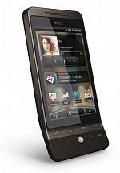

Hloupé chytré telefony
 Po čase používání telefonů s Androidem jsem dospěl k několika poznatkům. Jedním z nich je, že pokud máte starý stroj, brzy na něm skoro ani nezavoláte nebo nepošlete SMS, jelikož nestíhá. Druhým je fakt, že ať už budete mít jakkoliv lepší, čerstvější a nabouchanější model, nic vás nezachrání od stálého nabíjení šťávy.
Po čase používání telefonů s Androidem jsem dospěl k několika poznatkům. Jedním z nich je, že pokud máte starý stroj, brzy na něm skoro ani nezavoláte nebo nepošlete SMS, jelikož nestíhá. Druhým je fakt, že ať už budete mít jakkoliv lepší, čerstvější a nabouchanější model, nic vás nezachrání od stálého nabíjení šťávy.
Hrdina v důchodu
Vlastním HTC Hero, což je snad druhý telefon s Androidem, který byl na světě. Už je to od jeho vydání pár let, ale přesto na něm běží bez neoficiálních úprav Android 2.2 a zvládá vše, co současné telefony. Až tedy na to, že s pětiminutovým zpožděním.
S mobily jsme se dostali do stejné situace, jako kdysi s počítači. Dříve jste pořídili PC a do půl roka bylo staré. Dnes takový problém není – pokud zrovna nepaříte nejžhavější novinky herního trhu, vystačíte si s výkonem v dnešní době velmi průměrným.
Můj Hero teď vypadá jako 386 v dobách, kdy se všechny programy dělají už pro Pentium. Místo v telefonu dochází s updatem každé druhé aplikace, mobil se šíleně zpomaluje a i když vypnu vše co není potřeba a odinstaluji vše co nutně nepotřebuji, čekám po ťapnutí na ikonu nebo na nějaký ovládací prvek klidně i minuty, poštěstí-li se mi. Nejtragičtější momenty nastávají při používání prapůvodních funkcí mobilu, jako např. volání. Když ťapnete na hlavu kamaráda s úmyslem volat a následně to vzdáte po třech minutách pozorování zasekaného telefonu, je něco špatně.
Jasně, můžu si koupit nový telefon. Jenže to se mi vůbec nelíbí, já si kupuju telefony jen když mě okradou, když je ztratím, nebo když mi po třech, čtyřech letech doslouží. Hero mám ani ne rok a o investici do telefonu vůbec neuvažuji. Jasně, můžu strávit celý den hraním si s neoficiálními systémy jako CyanogenMod, vše si přizpůsobit a vymačkat z toho železa ještě co půjde. Ale to se mi prostě nechce… :/
Baterie, fail dnešní doby
Ať mi nikdo neříká, že kdyby se hodně zainvestovalo do výzkumu a vývoje baterií, nepřišel by brzy někdo s úžasnými nápady, jak narvat do dnešní malé baterky mnohonásobně víc energie, než je tam dnes.
Jenže lidem výdrž evidentně nevadí, rádi ji vyměňují za ťapací displeje a propojení s fejsbůkem. Takže jde vývoj jinudy…
Výdrž mého telefonu, ostatně jako i jakéhokoliv novějšího, je tristní. JuiceDefender nepomáhá, nebo jen zdánlivě. Obyčejně je problém za plného provozu přežít s nabitým telefonem i jednodenní otočku v Praze z Brna. Člověk si přečte pár věcí v autobuse, koukne na Twitter, v Praze koukne na mapy, checkne se na Foursquare, přijdou mu dvě SMS a telefon je mrtvý. O výletech do přírody vůbec nemluvím, tam Android můžete zahodit hned. Všechny outdoor aplikace jsou vám k ničemu, zvláště pokud potřebují GPS, které žere baterku několikrát rychleji.
Doma mám navíc Hero permanentně v nabíječce, protože nemám rád okamžiky, kdy vezmu telefon ze stolu a venku zjistím, že mám posledních 5 % baterky. Zase je něco špatně.
Řešení?
Co s tím? Koupit nový telefon? Poradíte nějaký dobrý? Nároky:
- nezprasený Android (nepředělaný od HTC apod.)
- rychlá odezva, dostatek místa
- nejlépe HW klávesnice, ale asi bych to nějak přežil
- displej normální, ne nějaký vyloženě miniaturní (Xperia)
- rozumná konstrukce (spadne na zem a přežije)
- nemusí to být nejnovější model (s bazarem mám dobré zkušenosti)
Co s baterkou? Koupit zásobu baterek do kapes? Nebo druhý telefon? Poradíte?
- výdrž týden
- synchronizace kontaktů s Google
- umí volat a psát SMS
- čím nezničitelnější konstrukce, tím lepší
A co dohromady, to by nešlo? Zase chci něco co neexistuje, že? :)